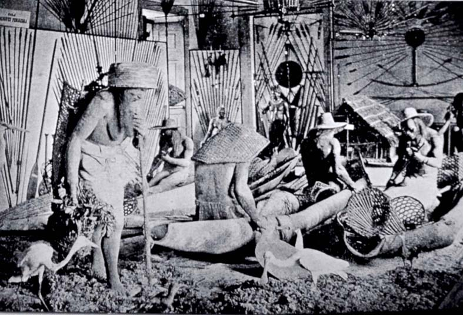

| Others and selves |
|  |
| Marc Ferrez, Exposição Antropológica Brasileira |
However, anthropological exhibitions and museums also indulged in a mode of showing 'otherness' in a more spectacular mode of illusionism. 'Life groups' of plaster figures such as the one seen above -an image taken, like the previous one, at the 1882 Brazilian Anthropological Exhibition at the National Museum of Rio de Janeiro- allowed viewers a glimpse at an 'indigenous everyday life' that never threatened to return the gaze, as in a panopticon or a peep-show. Thus, the subject of the gaze could experience a sensation of superiority and safety over the bodies put entirely her/his disposal. At the same time, their motionless poses (as if caught in a three-dimensional photograph) also suggested their being caught in an unchangeable, self-same, dead time, in stark contrast to the dynamic, progressive time of the viewing subject.
Very often, the power relations implicit in the 'life group' displays closely reflected those involved in their own making, as in the image shown above: the plaster casts for the figures on display had in fact been taken from real Brazilian aborigines who had been brought to Rio de Janeiro for this very purpose (whether or not this was with their own consent is never mentioned in the exhibition's records). They can thus be read as realist representations, but not of the 'village life' they pretend to depict but of the colonial relations of power and violence that are their condition of possibility. Almost all the images in this tour can be read in much the same way.